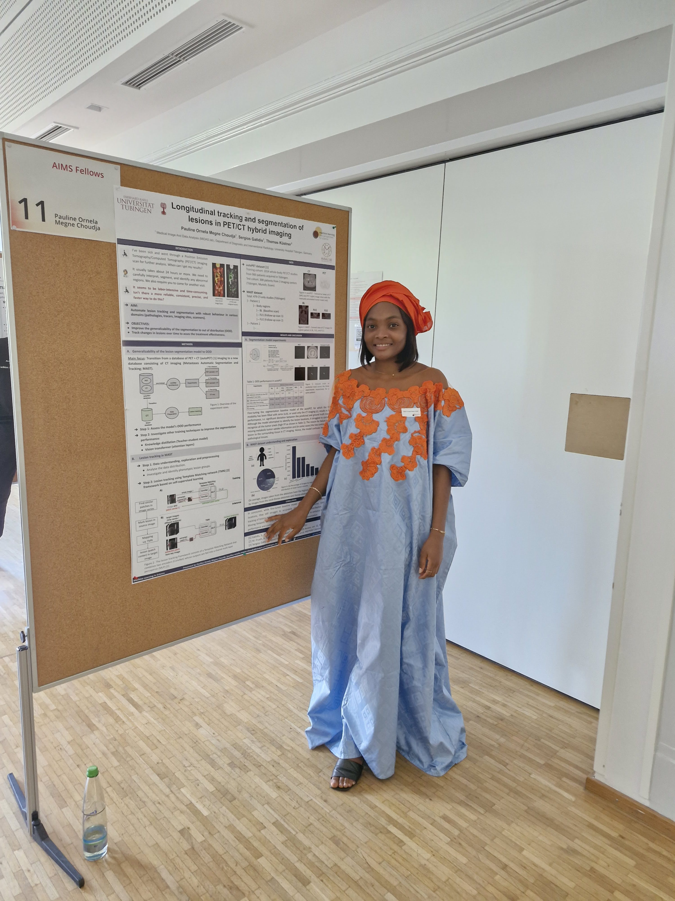

Conference
09 – 10 July 2024
Poster: 6th Cluster Conference "Machine Learning in Science", Germany


Topic: Longitudinal tracking and segmentation of lesions in Positron Emission Tomography (PET) and Computer Tomography (CT) hybrid imaging.
31 October – 04 November 2022
Attendee: Group of Earth Observations (GEO) Week 2022 conference, Ghana.
Aim: demonstrate how the utilization of Earth observations can facilitate efforts to mitigate the impacts of climate change, address biodiversity loss, promote ocean conservation, implement nature-based solutions, and address food security challenges,.
Publication
2024
-
Optimized machine learning models for hepatitis c prediction: Leveraging optuna for hyperparameter tuning and streamlit for model deployment.In Pan African Conference on Artificial Intelligence, pages 88–100.PDFAbstract: Machine Learning techniques have gained significant attention for their potential to solve diverse real-world problems across various fields. This study uses machine learning algorithms to predict hepatitis C stages, a prevalent liver disease affecting a substantial portion of the global population. By employing a dataset encompassing 615 patients and incorporating a multitude of factors associated with hepatitis C, a comprehensive analysis was conducted to compare the performance of six prominent machine learning algorithms. The algorithms considered include categorical boosting (CatBoost), Gaussian Naive Bayes (GNB), Random Forest (RF), Extreme Gradient Boosting (XGBoost), Light Gradient Boosting Machine (LGBM), and ExtraTreeClassifier (ExtraT). To optimize the performance of these models, a hyperparameter optimization technique called Optuna was utilized to find the ideal parameters for each algorithm. Subsequently, all models’ performance was evaluated using the test dataset, comprising 20% of the overall patient data. The research findings revealed that the XGBoost algorithm emerged as the most effective approach, exhibiting a remarkable accuracy of 94.31%. Furthermore, the XGBoost model demonstrated exceptional F1-score, precision, and recall values, measuring 94.23%, 94.63%, and 94.31%, respectively. Building upon these promising results, we deployed the XGBoost model in a user-friendly web application leveraging Streamlit. This deployment ensures easy accessibility and usability of the model for the broader community.